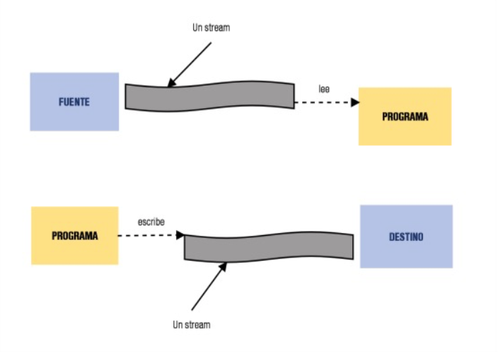
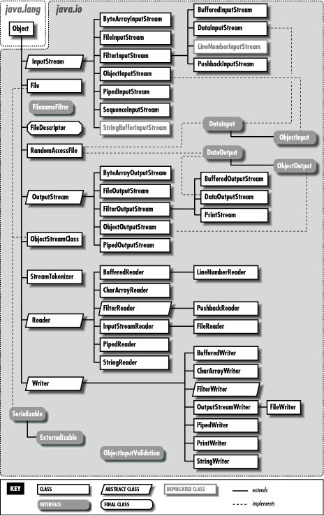
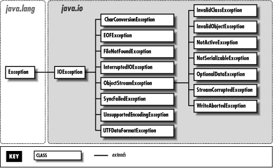
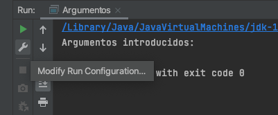
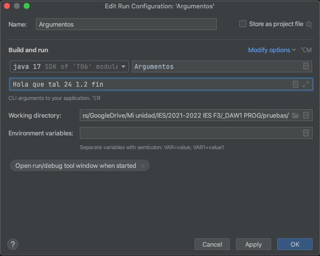
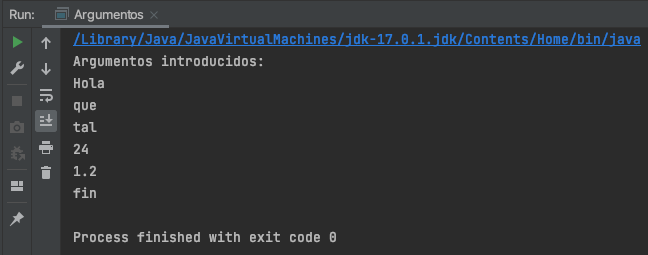
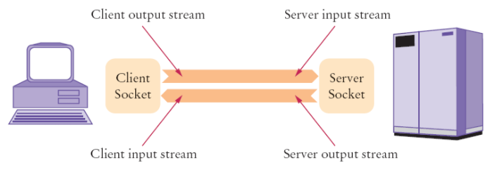

Programación
Tema 8: Flujos
Índice
- Introducción
- Ficheros
- Serialización
- Archivo Properties
- Argumentos
- Sockets
Introducción
Mediante los ficheros se consigue dar persistencia a las aplicaciones manteniendo los datos aunque se cierren.
A las operaciones que consituyen el flujo de información con el exterior del programa se les llama de Entrada/Salida. Hay de 2 tipos:
- Usuario ↔ Programa. Ej: Pedir datos.
- Programa ↔ Software exterior. Ej: Escritura a disco.
Introducción
Al trabajar con ficheros, las excepciones más comunes son:
- FileNotFoundException: No se encuentra el fichero.
- IOException: Error en permisos, fichero corrupto...
Introducción
Un flujo de datos es una abstracción de aquello que produzca o consuma información. Es una entidad lógica. Ej: Archivo, dispositivo de E/S, conector TCP/IP... Se representa mediante la clase Stream.

Introducción
La vinculación de un flujo al dispositivo físico es tarea del sistema de E/S de Java.
Nosotros sólo trataremos con el flujo y este será el que tenga que "entendérselas" con el SO concreto.
Con esto se consigue que la aplicación sea independiente del SO y dispositivos de almacentamiento utilizados.
Introducción
Clases relativas a flujos
Existen 2 tipos de flujos:
- De caracteres: Leen y escriben datos legibles por los humanos. Ej: Ficheros de texto. Se usan las clases abstractas Reader y Writer con los métodos read() y write().
- De bytes: Leen y escriben datos binarios legibles por las máquinas. Ej: Conexión TCP/IP. Se usan las clases abstractas InputStream y OutputStream con los métodos read() y write().
Introducción
Paquete java.io

Introducción
Excepciones del paquete java.io

Índice
- Introducción
- Ficheros
- Serialización
- Archivo Properties
- Argumentos
- Sockets
Ficheros → Lectura
- Clases del paquete java.io
- Operaciones en bloques try-catch para capturar excepciones.
- Manejador de ficheros: objeto que hace referencia al fichero con el que trabajar. Creación:
// Ruta del archivo relativa a la raíz del proyecto
BufferedReader bf = new BufferedReader(new FileReader("archivo.txt"));
String linea = bf.readLine();
bf.close(); // No olvidar cerrarlo al terminar
Ficheros → Lectura
// Lee fichero mostrando su contenido
String linea = "";
try{
// Crear manejador de ficheros (stream)
BufferedReader bf = new BufferedReader(new FileReader("archivo.txt"));
// Leer línea a línea
while(linea != null){
System.out.println(linea);
linea = bf.readLine();
}
// Cerrar el stream
bf.close();
}catch(FileNotFoundException e){
System.out.println("No se encuentra el fichero");
}catch(IOException e){
System.out.println("No se puede leer el fichero");
}
Ficheros → Lectura
// Lee notas de fichero y calcula la media
int notas = 0;
int contador_lineas = 0;
try{
// Crear manejador de ficheros (stream)
BufferedReader bf = new BufferedReader(new FileReader("notas.txt"));
// Leer línea a línea
String linea = bf.readLine();
while(linea != null){
contador_lineas++;
// Convertir línea a int eliminando antes espacios
notas += Integer.parseInt(linea.trim());
linea = bf.readLine();
}
bf.close(); // Cerrar el stream
}catch(FileNotFoundException e){
System.out.println("No se encuentra el fichero");
}catch(IOException e){
System.out.println("No se puede leer el fichero");
}
System.out.println("Nota media: " + notas / contador_lineas);
Ficheros → Escritura
- Mediante manejador.write("texto") pudiendo meter saltos de línea, tabulaciones...
- Operaciones en bloques try-catch para capturar excepciones.
- Creación y uso del manejador:
// Ruta del archivo relativa a la raíz del proyecto
BufferedWriter bw = new BufferedWriter(new FileWriter("archivo.txt"));
bw.write("Línea 1\n");
bw.close();
Ficheros → Escritura
try {
BufferedWriter bw = new BufferedWriter(new FileWriter("archivo.txt"));
bw.write("Línea 1\n");
bw.write("Línea 2\n");
bw.write("Línea 3\n");
bw.close();
System.out.println("Escritura en archivo finalizada");
} catch (IOException e) {
e.printStackTrace();
}
Ficheros → Escritura
Añadir información al final del archivo.
En el constructor de FileWriter, segundo parámetro append a true.
BufferedWriter bw = new BufferedWriter(new FileWriter("archivo.txt", true));
bw.write("Línea 1\n");
bw.close();
Ficheros
// Ejemplo lectura y escritura sobre el mismo archivo
String texto = "";
int contador = 0;
try{
BufferedReader bf = new BufferedReader(new FileReader("archivo.txt"));
String linea = bf.readLine();
while(linea != null){
texto = texto + (++contador) + linea + "\n";
linea = bf.readLine();
}
bf.close();
// Se crea el stream de salida cuando el de entrada está cerrado
BufferedWriter bw = new BufferedWriter(new FileWriter("archivo.txt"));
bw.write(texto);
bw.close();
}catch(FileNotFoundException e){
System.out.println("No se encuentra el fichero");
}catch(IOException e){
System.out.println("No se puede leer el fichero");
}
Ficheros
// Ejemplo lectura y escritura sobre distintos archivos
try{
BufferedReader bf1 = new BufferedReader(new FileReader("fichero1.txt"));
BufferedReader bf2 = new BufferedReader(new FileReader("fichero2.txt"));
BufferedWriter bw = new BufferedWriter(new FileWriter("mezcla.txt"));
String linea1 = bf1.readLine();
String linea2 = bf2.readLine();
while(linea1 != null || linea2 != null){
if(linea1 != null) bw.write(linea1 + "\n");
if(linea2 != null) bw.write(linea2 + "\n");
linea1 = bf1.readLine();
linea2 = bf2.readLine();
}
bf1.close();
bf2.close();
bw.close();
}catch(FileNotFoundException e){
System.out.println("No se encuentra alguno de los ficheros");
}catch(IOException e) {
System.out.println("No se puede leer alguno de los ficheros");
}
Ficheros
Otras operaciones
// Mostrar lista de archivos del directorio actual
File fichero = new File(".");
String[] listaArchivos = fichero.list();
for(String f : listaArchivos) System.out.println(f);
Ficheros
Otras operaciones
// Eliminar fichero pedido por teclado
Scanner s = new Scanner(System.in);
System.out.println("Introduce nombre de archivo a eliminar: ");
String nombreFichero = s.nextLine();
File fichero = new File(nombreFichero);
if(fichero.exists()){
fichero.delete();
System.out.println("Fichero eliminado");
}else{
System.out.println("El fichero no existe");
}
Índice
- Introducción
- Ficheros
- Serialización
- Archivo Properties
- Argumentos
- Sockets
Serialización
Transformar objetos en bytes para almacenarlos en disco.
Para serializar un objeto, su clase y la de todos los objetos dentro del mismo, deben implementar la interfaz java.io.Serializable
public class Cliente implements Serializable {
...
}
public class Cuenta implements Serializable {
Cliente titular;
...
}
Serialización
Escribir objeto
String cadena = new String("Eso es una cadena");
ObjectOutputStream oos;
try {
oos = new ObjectOutputStream(new FileOutputStream("cadena.out"));
oos.writeObject(cadena);
oos.close();
} catch (FileNotFoundException e) {
e.printStackTrace();
} catch (IOException e) {
e.printStackTrace();
}
Serialización
Leer objeto
ObjectInputStream ois;
try {
ois = new ObjectInputStream(new FileInputStream("cadena.out"));
String cadena = (String) ois.readObject();
ois.close();
System.out.println(cadena);
} catch (FileNotFoundException e) {
e.printStackTrace();
} catch (IOException e) {
e.printStackTrace();
} catch (ClassNotFoundException e) {
e.printStackTrace();
}
Serialización
Ejemplo en clase Persona
// método guardar de Persona
oos = new ObjectOutputStream(new FileOutputStream("persona.dat"));
oos.writeObject(this);
// método recuperar de Persona
ois = new ObjectInputStream(new FileInputStream("persona.dat"));
p = (Persona) ois.readObject();
Serialización
Ejercicio: App Banco
- Constructor para leer de disco el ArrayList.
- Método para escribir a disco las cuentas.
- Las clase Cuenta, Cliente y Movimiento implementan la interfaz Serializable.
- Añadir la entrada del menú correspondiente y la creación de las cuentas de prueba en el constructor.
Serialización
Ejercicios del 1 al 5
Índice
- Introducción
- Ficheros
- Serialización
- Archivo Properties
- Argumentos
- Sockets
Properties
La clase java.util.Properties permite guardar parámetros o preferencias de la aplicación de forma sencilla.
Almacena pares clave-valor como un HashMap, pero ambos de tipo String.
Se pueden definir valores por defecto.
Se pueden aplicar los métodos put y putAll, ya que hereda de Hashtable.
La tabla puede ser grabada y recuperada de un stream en una única operación.
Properties
Métodos:
- getProperty(String key): Devuelve un String con el valor asociado a la clave.
- setProperty(String key, String valor): Guarda un String asociado a la clave proporcionada.
# Ejemplo Properties
# Mon Mar 24 20:50:56 2022
lastAccess=139056543434
language=ES
Properties
El archivo Properties también se puede editar directamente desde un editor de texto plano.
Para utilizarlo desde Java hay que instanciar un objeto de la clase Properties y recuperar el contenido del archivo mediante load:
Properties properties = new Properties();
// 3 formas de cargarlo
properties.load(new FileReader("archivo.properties"));
properties.load(new BufferedReader(new FileReader("archivo.properties")));
properties.load(new FileInputStream("archivo.properties"));
Properties
Para guardar los cambios en fichero del objeto Properties se puede hacer también de 3 formas mediante store:
Properties properties = new Properties();
// 3 formas de escribir el objeto properties a fichero
properties.store(new FileWriter("archivo.properties"), "Comentarios");
properties.store(new BufferedWriter(new FileWriter("archivo.properties"), "Comentarios");
properties.store(new FileOutputStream("archivo.properties"), "Comentarios");
Properties → Escritura
Modificar el valor de una propiedad:
// Crear objeto Properties
Properties properties = new Properties();
// Modificar propiedades
properties.setProperty("lastAccess", LocalDate.now().toString());
properties.setProperty("language", "ES");
// Escribir el objeto properties a fichero
properties.store(new FileWriter("archivo.properties"), "Fichero de configuración");
Properties → Lectura
Al obtener una pareja mediante su clave, se puede indicar un valor por defecto para devolver en el caso de que no tenga uno asociado.
// Crear objeto Properties
Properties properties = new Properties();
// Cargar propiedades al objeto properties desde fichero
properties.load(new FileReader("archivo.properties"));
// Leer propiedades
String lastAccess = properties.getProperty("lastAccess");
String language = properties.getProperty("language", "ES");
Properties
Ejercicio
Crea un programa que mediante un archivo properties guarde las siguientes preferencias de usuario: color de texto e idioma.
El programa debe leer dicho archivo para mostrar la interfaz en el idioma y color correspondiente. También debe proporcionar un menú para que el usuario pueda cambiar dichas opciones.
Properties
Ejercicios del 6 al 8
Índice
- Introducción
- Ficheros
- Serialización
- Archivo Properties
- Argumentos
- Sockets
Argumentos
Pasar argumentos por línea de comandos se utilizan en numerosos programas. Por ejemplo, en los scripts o comandos de Linux:
# Devuelve las 5 primeras líneas del archivo de cuentas de usuario
$ head -5 /etc/passwd
En java también los podemos usar al llamar a nuestros programas:
$ java Argumentos hola que tal 24 1.2 fin
Argumentos
En Java, los argumentos se pasan mediante un array de Strings en la cabecera del método main:
public static void main(String[] args){
System.out.println("Argumentos introducidos: ");
for(String arg : args) System.out.println(arg);
}
Argumentos
Establecer argumentos desde IntelliJ

Argumentos
Establecer argumentos desde IntelliJ

Argumentos
Establecer argumentos desde IntelliJ

Argumentos
Ejercicio
Programa que calcule la suma, media, máximo y mínimo de una serie de números pasados como argumentos del programa.
Argumentos
Ejercicio
Modifica el programa anterior para que reciba como argumento el nombre del fichero donde están los números.
Argumentos
Ejercicios del 9 al 12
Índice
- Introducción
- Ficheros
- Serialización
- Archivo Properties
- Argumentos
- Sockets
Sockets
Mecanismo que nos permite establecer un enlace entre dos programas que se ejecutan independientes el uno del otro (generalmente un programa cliente y un programa servidor) mediante la librería java.net, la cual nos provee dos clases:
- Socket, para implementar la conexión desde el lado del cliente.
- ServerSocket, que nos permitirá manipular la conexión desde el lado del servidor.
Sockets
Tanto el cliente como el servidor no necesariamente deben estar implementados en Java, sólo deben conocer sus direcciones IP y el puerto por el cual se comunicarán.

Sockets
El servidor estará a la espera de una conexión. El cliente enviará un mensaje de petición al servidor y éste le responderá afirmativamente para que pueda empezar a enviarle mensajes.

Sockets
Ejemplo Chat Gráfico
- Con Interfaz Gráfica
- Cliente y servidor en Java
- Se comunican por el puerto 9999
- Servidor siempre a la espera de una conexión
- Cuando el cliente envía mensaje, el servidor lo muestra
Sockets
Ejemplo Chat múltiple
- Con Interfaz en consola
- Ejemplo más completo
- El servidor responde a las peticiones del cliente
- Fichero properties de configuración en los clientes
Sockets
Ejercicio
Modifica el programa anterior del chat para que el servidor almacene todos los mensajes recibidos junto a su remitente y fecha/hora de cada uno en un archivo.
Sockets
Ejercicios hasta el final

Repasar
Tips de la presentación
¿Imprimir en PDF?
- Clic aquí
- CTRL/CMD + P
- Guardar como PDF
Navegar por las diapositivas
- Pulsa ESC
- Clic a la que quieras ir